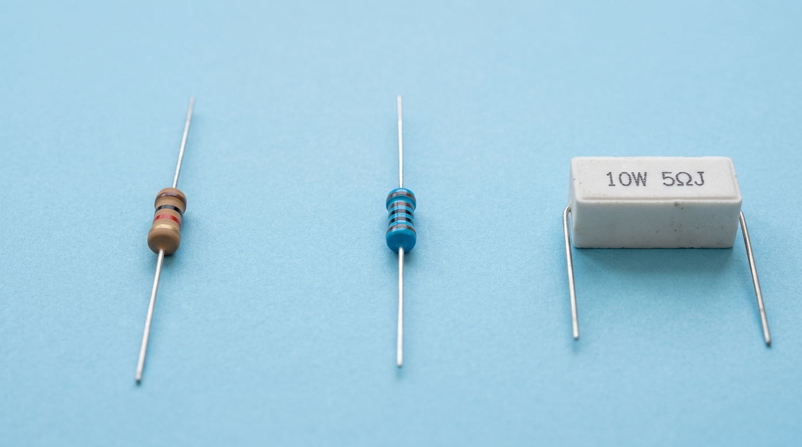
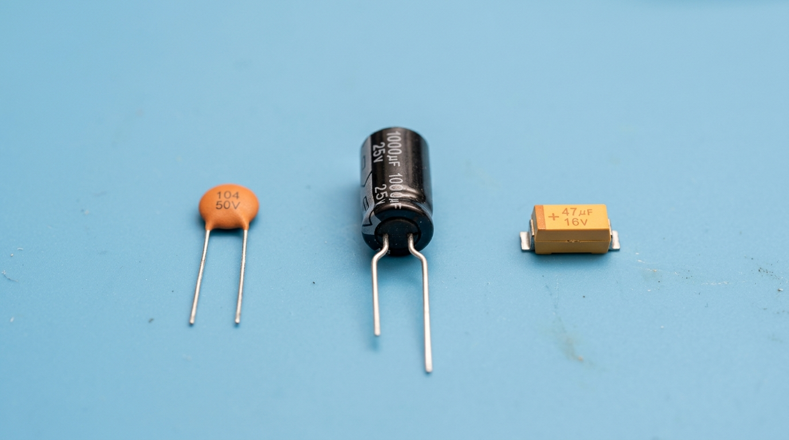
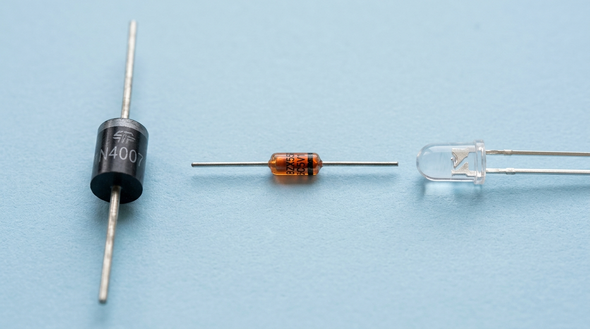
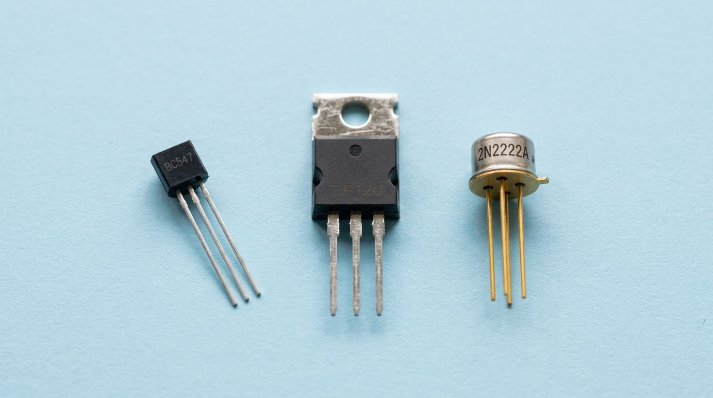

Mở đầu: Bước chân đầu tiên vào thế giới vi mạch
Trước khi bắt đầu giải hệ phương trình mạng điện phức tạp bằng máy tính hay viết các dòng mã lệnh điều khiển vi xử lý, bạn phải biết cách giao tiếp với các linh kiện vật lý. Linh kiện điện tử là những khối xây dựng cơ bản của mọi thiết bị công nghệ, và thiết bị đo vạn năng kế VOM (Volt-Ohm-Milliammeter) hay Multimeter chính là "cặp mắt" giúp bạn nhìn thấy được các thông số điện áp, dòng điện và điện trở vốn hoàn toàn vô hình.
Bài học này sẽ hướng dẫn bạn phương pháp đọc trị số chính xác của các linh kiện thụ động phổ biến (điện trở vạch màu, tụ điện mã hóa), cách xác định cấu trúc chân linh kiện bán dẫn (đi-ốt, transistor BJT/MOSFET) và cách dùng đồng hồ đo kiểm để chẩn đoán tình trạng hoạt động của mạch điện thực tế.
1. Cách đọc trị số linh kiện thụ động
1.1 Đọc mã màu điện trở (Color Code)
Điện trở là linh kiện cản trở dòng điện, có ký hiệu là $R$ (đơn vị $\Omega$ - Ohm). Do kích thước vật lý nhỏ, các điện trở xuyên lỗ (through-hole) thường dùng các vòng màu để ký hiệu trị số của chúng. Có hai loại điện trở màu phổ biến: 4 vòng màu và 5 vòng màu.

- 1. Điện trở carbon (4 vòng màu - Trái): Thân màu đất cát, đọc trị số bằng các vòng màu. Ví dụ trên hình: vạch màu Nâu (1) - Đen (0) - Đỏ (x100) - Nhũ Vàng (±5%) $\rightarrow R = 1,000\,\Omega = 1\,\text{k}\Omega \pm 5\%$.
- 2. Điện trở kim loại (5 vòng màu - Giữa): Thân màu xanh lam, có độ chính xác cao hơn (5 vòng màu). Thường dùng trong các mạch đo lường, âm thanh chất lượng cao.
-
3. Điện trở xi măng (Phải): Thân sứ/xi măng hình hộp chữ nhật lớn. Trị số công suất
và điện trở được ghi trực tiếp trên thân (ví dụ:
10W 5ΩJtức công suất tối đa 10 Watts, trị số trở kháng $5\,\Omega$, sai số J = ±5%).
| Màu sắc | Giá trị số | Hệ số nhân ($10^x$) | Sai số (4 vòng) | Sai số (5 vòng) |
|---|---|---|---|---|
| Đen | 0 | $10^0 = 1$ | - | - |
| Nâu | 1 | $10^1 = 10$ | $\pm 1\%$ | $\pm 1\%$ |
| Đỏ | 2 | $10^2 = 100$ | $\pm 2\%$ | $\pm 2\%$ |
| Cam | 3 | $10^3 = 1.000$ | - | - |
| Vàng | 4 | $10^4 = 10.000$ | - | - |
| Lục | 5 | $10^5 = 100.000$ | $\pm 0.5\%$ | $\pm 0.5\%$ |
| Lam | 6 | $10^6 = 1.000.000$ | $\pm 0.25\%$ | $\pm 0.25\%$ |
| Tím | 7 | $10^7 = 10.000.000$ | $\pm 0.1\%$ | $\pm 0.1\%$ |
| Xám | 8 | $10^8$ | - | - |
| Trắng | 9 | $10^9$ | - | - |
| Nhũ Vàng (Gold) | - | $10^{-1} = 0.1$ | $\pm 5\%$ | $\pm 5\%$ |
| Nhũ Bạc (Silver) | - | $10^{-2} = 0.01$ | $\pm 10\%$ | $\pm 10\%$ |
// Bảng tra "tên màu → giá trị số" (bản đầy đủ hỗ trợ 5 vòng màu nằm trong file tải về cuối bài)
const MAU = { den: 0, nau: 1, do: 2, cam: 3, vang: 4, xanh_luc: 5, xanh_lam: 6, tim: 7, xam: 8, trang: 9 };
function docTroVachMau(bands) {
const [vong1, vong2, heSoNhan] = bands;
// Hai vòng đầu ghép thành số 2 chữ số, vòng 3 là số mũ của 10
return (MAU[vong1] * 10 + MAU[vong2]) * Math.pow(10, MAU[heSoNhan]); // đơn vị: Ohm
}
console.log(docTroVachMau(['do', 'tim', 'cam'])); // 27000 → 27 kΩ
console.log(docTroVachMau(['nau', 'den', 'do'])); // 1000 → 1 kΩ (đúng con trở trong trình giả lập ở mục 5)// ❌ SAI: cầm ngược đầu nên đọc thành Cam - Tím - Đỏ
docTroVachMau(['cam', 'tim', 'do']); // 3700 Ω — sai hoàn toàn so với 27000 Ω!
// ✅ ĐÚNG: xác định chiều đọc TRƯỚC khi tra bảng:
// 1. Vòng sai số (Nhũ Vàng/Nhũ Bạc) luôn nằm BÊN PHẢI, tách xa nhóm vòng còn lại;
// 2. Vòng số 1 nằm sát mép thân điện trở hơn;
// 3. Vẫn nghi ngờ? Đo lại bằng VOM thang Ω để đối chiếu (xem mục 3 và trình giả lập mục 5).
docTroVachMau(['do', 'tim', 'cam']); // 27000 Ω = 27 kΩ ± 5%Việc tra cứu mã màu sang trị số trong lập trình thực tế thường sử dụng cấu trúc dữ liệu bảng băm (hash map) để tối ưu thời gian tìm kiếm đạt độ phức tạp \(O(1)\), bạn có thể học cách xây dựng các thuật toán này tại series Cấu trúc dữ liệu & Giải thuật.
1.2 Đọc mã số ghi trên tụ điện (Capacitor Codes)
Tụ điện tích trữ năng lượng dưới dạng điện trường, có ký hiệu là \(C\) (đơn vị \(\text{F}\) - Farad, thường dùng microFarad \(\mu\text{F}\), nanoFarad \(\text{nF}\), picoFarad \(\text{pF}\)).
- Tụ hóa (Electrolytic): Kích thước lớn, ghi trực tiếp điện dung và điện áp chịu đựng (ví dụ: \(10\,\mu\text{F} - 25\text{V}\)). Tụ hóa là tụ phân cực, có chân ngắn hơn là cực âm (-) kèm theo vạch trắng in ký hiệu (-) dọc theo thân tụ.
- Tụ gốm/tụ đất (Ceramic/Polyester): Kích thước nhỏ, không phân cực, ghi số bằng mã 3 chữ số (đơn vị mặc định là \(\text{pF}\)). Hai chữ số đầu (\(AB\)) là giá trị cơ bản, chữ số thứ ba (\(M\)) là hệ số nhân (\(10^M\)). \[C = (10 \cdot A + B) \cdot 10^M \quad (\text{pF})\]
// ma: chuỗi in trên thân tụ, ví dụ '104' — 2 số đầu là giá trị, số cuối là hệ số nhân
function docMaTuDien(ma) {
const pF = parseInt(ma.slice(0, 2), 10) * Math.pow(10, parseInt(ma[2], 10));
return { pF: pF, nF: pF / 1e3, uF: pF / 1e6 };
}
console.log(docMaTuDien('104')); // { pF: 100000, nF: 100, uF: 0.1 }
console.log(docMaTuDien('223')); // { pF: 22000, nF: 22, uF: 0.022 }
-
1. Tụ gốm (Ceramic - Trái): Không phân cực, dung lượng nhỏ. Trên hình ghi mã
104 50V\(\rightarrow 10 \times 10^4\,\text{pF} = 100\,\text{nF} = 0.1\,\mu\text{F}\), chịu đựng tối đa 50V. -
2. Tụ hóa (Electrolytic - Giữa): Phân cực, dung lượng lớn, hình trụ. Trên hình ghi
trực tiếp
1000µF 25V. Cực âm (-) có vạch xám dài trên thân tụ. -
3. Tụ Tantalum (SMD Tantalum - Phải): Phân cực, bền bỉ và ổn định cao ở tần số cao.
Trên hình ghi
+ 47µF 16V(vạch màu sẫm và dấu cộng biểu thị cực dương).
1.3 Cách đọc thông số cuộn cảm (Inductor Codes)
Cuộn cảm (Inductor) là linh kiện thụ động tích trữ năng lượng dưới dạng từ trường khi có dòng điện chạy qua, ký hiệu là \(L\) (đơn vị Henry — \(\text{H}\)). Linh kiện thực tế thường có trị số rất nhỏ ở mức milli-Henry (\(\text{mH}\)) hoặc micro-Henry (\(\mu\text{H}\)). Cách đọc trị số cuộn cảm thông dụng như sau:
- Cuộn cảm vòng màu: Thường có dạng hình trụ giống điện trở xuyên lỗ nhưng thân hơi bầu và có màu nền xanh lục (green) hoặc xanh lam nhạt. Quy tắc đọc vòng màu giống hệt điện trở ở mục 1.1, tuy nhiên đơn vị mặc định là micro-Henry (\(\mu\text{H}\)). Ví dụ: vòng màu Nâu (1) - Đen (0) - Nâu (x10) - Nhũ Vàng (±5%) biểu thị trị số \(100\,\mu\text{H} \pm 5\%\).
-
Mã số SMD (3 chữ số): Ghi trực tiếp trên các cuộn cảm dán dạng hộp hoặc lõi ferrite hở.
Hai chữ số đầu là giá trị, chữ số thứ ba là hệ số nhân số mũ (\(10^M\)), đơn vị mặc định là
\(\mu\text{H}\). Ví dụ: mã
221biểu thị \(22 \times 10^1 = 220\,\mu\text{H}\). -
Ký hiệu chữ R làm dấu thập phân: Đối với các cuộn cảm có giá trị nhỏ dưới
\(10\,\mu\text{H}\), chữ
Rbiểu diễn dấu phẩy. Ví dụ: mã4R7biểu thị \(4.7\,\mu\text{H}\), mãR22biểu thị \(0.22\,\mu\text{H}\).
// Hỗ trợ cả mã số mũ ('221' → 220 µH) lẫn chữ R làm dấu thập phân ('4R7' → 4.7 µH)
function docMaCuonCam(ma) {
if (ma.includes('R')) return parseFloat(ma.replace('R', '.')); // đơn vị: µH
return parseInt(ma.slice(0, 2), 10) * Math.pow(10, parseInt(ma[2], 10));
}
console.log(docMaCuonCam('221')); // 220 (µH)
console.log(docMaCuonCam('4R7')); // 4.7 (µH)
console.log(docMaCuonCam('R22')); // 0.22 (µH)2. Nhận diện các cực và chân của linh kiện bán dẫn
Các linh kiện bán dẫn (đi-ốt, transistor) bắt buộc phải cắm đúng các cực trong mạch để hoạt động, cắm ngược có thể dẫn đến hỏng mạch hoặc cháy linh kiện ngay lập tức do quá dòng.
2.1 Đi-ốt (Diode)
Đi-ốt là linh kiện bán dẫn chỉ cho phép dòng điện đi qua theo một chiều từ Anode (A - cực dương) sang Cathode (K - cực âm).
- Nhận diện vật lý: Đi-ốt thường có thân hình trụ màu đen với một vòng màu bạc (hoặc vòng màu đối lập ở đầu đi-ốt) đánh dấu ở phía cực Cathode (K).
-
Cách kiểm tra bằng VOM: Chuyển đồng hồ sang thang đo đi-ốt (\(\rightarrow|\)):
- Đo thuận: Đặt que đỏ (+) vào Anode, que đen (-) vào Cathode. Màn hình sẽ hiển thị điện áp sụt thế thuận khoảng \(0.6\text{ V} - 0.7\text{ V}\) đối với đi-ốt Silicon (như 1N4007) hoặc \(0.2\text{ V} - 0.3\text{ V}\) đối với đi-ốt Schottky.
-
Đo ngược: Đặt que đỏ (+) vào Cathode, que đen (-) vào Anode. Màn hình hiển thị
O.L(Over Limit - Vượt giới hạn) biểu thị đi-ốt chặn hoàn toàn dòng điện ngược, có điện trở vô hạn.

-
1. Đi-ốt chỉnh lưu Silicon (Trái): Thường có mã như
1N4007, chịu dòng và áp cao. Vòng màu bạc đánh dấu cực âm Cathode (K), phần thân đen còn lại nối cực dương Anode (A). -
2. Đi-ốt Zener (Giữa): Thường đóng vỏ thủy tinh màu cam/đỏ có vạch đen đánh dấu cực
âm (ví dụ dòng
BZX55). Dùng để ghim điện áp tham chiếu ổn định trong mạch nguồn. - 3. Đi-ốt phát quang (LED - Phải): Phát sáng khi phân cực thuận. Chân dài hơn là cực dương Anode (A), chân ngắn hơn (hoặc cạnh vát phẳng trên mũ nhựa) là cực âm Cathode (K).
❌ Sai (Anti-pattern): Cắm ngược chiều chân LED (Anode vào cực âm GND, Cathode vào cực dương nguồn cấp) hoặc chạm nhầm que đo VOM (que Đỏ vào Cathode, que Đen vào Anode).
Hậu quả: LED bị phân cực ngược, không phát sáng. Dù không làm cháy LED ở điện áp thấp (như
5V), kết quả đo sụt áp thuận trên VOM sẽ hiển thị O.L khiến bạn nhầm tưởng LED bị hỏng.
✅ Đúng (Best-practice): Luôn nối chân dài Anode (+) về phía nguồn điện dương, chân ngắn Cathode (-) về phía GND. Khi đo bằng thang đi-ốt của VOM, chạm que Đỏ vào Anode và que Đen vào Cathode. LED sẽ sáng nhẹ và màn hình hiển thị khoảng 1.8V - 2.0V.
2.2 Transistor BJT & MOSFET
Transistor là linh kiện bán dẫn chủ đạo dùng để khuếch đại tín hiệu hoặc hoạt động như một công tắc điện tử (solid-state switch) trong các mạch số và mạch công suất. Có hai họ transistor phổ biến nhất là BJT và MOSFET với nguyên lý hoạt động và cách nhận diện chân khác biệt hoàn toàn:
- BJT (Bipolar Junction Transistor - Transistor lưỡng cực): Hoạt động dựa trên cả hai loại hạt tải điện (electron và lỗ trống). BJT gồm 3 cực: Base (B - cực nền), Collector (C - cực thu), và Emitter (E - cực phát). Đây là linh kiện điều khiển bằng dòng điện (current-controlled): một dòng điện nhỏ đi vào cực B (\(I_B\)) sẽ quyết định và cho phép một dòng điện lớn hơn gấp nhiều lần chạy qua cực C sang cực E (\(I_C = \beta \cdot I_B\)). BJT có hai loại cấu trúc chính: NPN (dẫn dòng từ C sang E khi B có điện áp dương hơn E) và PNP (dẫn dòng từ E sang C khi B có điện áp âm hơn E).
- MOSFET (Metal-Oxide-Semiconductor Field-Effect Transistor - Transistor hiệu ứng trường kim loại - oxit - bán dẫn): Gồm 3 cực: Gate (G - cực cổng), Drain (D - cực máng), và Source (S - cực nguồn). Khác với BJT, MOSFET là linh kiện điều khiển bằng điện áp (voltage-controlled): điện áp đặt vào cực G so với cực S (\(V_{GS}\)) sẽ tạo ra một điện trường điều khiển độ rộng của kênh dẫn bán dẫn nối giữa D và S, cho phép hoặc chặn dòng điện \(I_D\) chạy qua D-S. MOSFET có trở kháng ngõ vào cực kỳ lớn (lên tới hàng Mega-Ohm) và nội trở đóng dẫn (\(R_{DS(on)}\)) cực kỳ nhỏ (chỉ vài mili-Ohm ở các dòng công suất như IRF540), giúp tổn hao nhiệt rất thấp và tần số đóng cắt rất cao.
- Xác định chân của MOSFET TO-220 (ví dụ IRF540): Khi đặt transistor nằm ngửa (mặt nhựa màu đen hướng về phía mắt bạn, miếng tản nhiệt kim loại ở phía sau, 3 chân hướng xuống dưới), thứ tự các chân từ trái qua phải luôn tuân theo quy ước chuẩn: Chân 1 là Gate (G), Chân 2 là Drain (D), và Chân 3 là Source (S). Lưu ý rằng miếng tản nhiệt kim loại phía sau (tab) thường được nối thông mạch trực tiếp với chân 2 (Drain) bên trong linh kiện, cần chú ý lót tấm cách điện khi lắp chung tản nhiệt với các linh kiện khác. Cách định vị sơ đồ chân linh kiện này tương tự như việc ánh xạ địa chỉ biến trong bộ nhớ bằng con trỏ mà bạn sẽ gặp trong series Lập trình C.

-
1. Gói vỏ nhựa TO-92 (Trái): Dành cho transistor công suất nhỏ (tín hiệu). Khi nhìn
mặt phẳng dẹt phía trước, thứ tự chân từ trái qua phải là E-B-C (ví dụ:
BC547). -
2. Gói vỏ lớn TO-220 (Giữa): Transistor công suất trung bình/lớn như BJT Darlington
TIP120hoặc MOSFET công suấtIRF540. Gói vỏ này có miếng tản nhiệt kim loại phía sau giúp khuếch tán nhiệt tốt hơn. Thứ tự chân từ trái qua phải khi nhìn mặt trước dẹt là B-C-E (đối với BJT) hoặc G-D-S (đối với MOSFET). -
3. Gói vỏ kim loại TO-18 (Phải): Kiểu vỏ kim loại tròn cổ điển có tai định vị (ví
dụ vỏ sắt
2N2222A). Vỏ kim loại giúp chống nhiễu tốt và tản nhiệt tốt hơn vỏ nhựa.
-
Tìm chân Base (B): Chuyển VOM sang thang đo đi-ốt. Chân Base là chân duy nhất mà
khi đặt cố định một que đo vào đó, que đo còn lại chạm vào hai chân còn lại đều cho giá trị sụt áp
thuận của đi-ốt (\(0.6\text{ V} - 0.7\text{ V}\)).
- Nếu que cố định là que đỏ (+), đó là transistor loại NPN.
- Nếu que cố định là que đen (-), đó là transistor loại PNP.
-
Tìm chân Emitter (E) và Collector (C): Đo sụt áp thuận từ Base tới hai chân còn
lại. Chân nào có trị số sụt áp lớn hơn một chút sẽ là chân
Emitter (E) do vùng bán dẫn cực E được pha tạp chất nồng độ cao hơn cực C.
Ví dụ thực tế: \(V_{BE} = 0.702\text{ V}\) và \(V_{BC} = 0.698\text{ V}\) \(\rightarrow\) Chân có sụt áp \(0.702\text{ V}\) chính là Emitter.
Lưu ý khoa học máy tính: Cơ chế này tương tự như quá trình Tìm kiếm nhị phân (Binary Search) hoặc giải thuật phân tích đặc trưng nhánh nhằm loại trừ nhanh các khả năng sai lệch để tìm ra cực chuẩn xác. Bạn có thể tìm hiểu thêm về cấu trúc cây phân loại tại Bài học Cấu trúc Cây Tìm Kiếm Nhị Phân AVL & Đỏ Đen ở Series Thuật Toán.
2.3 Vi mạch tích hợp (Integrated Circuit - IC / Chip)
Vi mạch tích hợp (IC) là một mạch điện tử siêu nhỏ chứa hàng nghìn đến hàng tỷ linh kiện bán dẫn (transistor, đi-ốt, điện trở) được chế tạo trực tiếp trên một tấm bán dẫn silicon duy nhất (silicon die) và đóng gói bảo vệ trong vỏ nhựa hoặc gốm. IC giúp tối giản hóa kích thước thiết bị và tăng độ tin cậy của hệ thống lên hàng triệu lần so với việc dùng linh kiện rời.
Các loại IC có nhiều kiểu chân khác nhau, phổ biến nhất ở quy mô thực hành thí nghiệm là dạng cắm DIP (Dual In-line Package) với hai hàng chân song song, và dạng dán SOIC (Small Outline Integrated Circuit). Để cắm đúng IC vào mạch, ta bắt buộc phải nhận diện chính xác thứ tự chân:
- Nhận diện Chân số 1 (Pin 1): Trên thân vỏ của mọi IC luôn có dấu hiệu nhận dạng vật lý đặc trưng. Đó có thể là một vết khía hình bán nguyệt (Notch) cắt lõm ở một đầu của IC, hoặc một chấm tròn nhỏ (Dot) được dập nổi/lõm ngay góc của một chân. Chân nằm ở góc dưới bên trái của vết khía (khi đặt IC nằm dọc với vết khía hướng lên trên), hoặc chân nằm ngay sát chấm tròn nhỏ chính là chân số 1.
- Quy luật đánh số chân (Counter-Clockwise Rule): Bắt đầu từ chân số 1, thứ tự các chân tiếp theo được đếm tăng dần lần lượt dọc theo cạnh bên trái đi xuống dưới. Khi chạm tới chân cuối cùng của hàng bên trái, ta chuyển sang chân đối diện ở hàng bên phải và tiếp tục đếm ngược ngược lên trên dọc theo hàng bên phải. Như vậy, hướng đếm chân luôn đi theo chiều ngược chiều kim đồng hồ ↺ chạy vòng quanh thân IC.
- Ví dụ với IC NE555: Đây là IC tạo xung/định thời 8 chân kinh điển. Khi nhìn từ trên xuống dưới với vết khía hướng lên trên: hàng bên trái gồm chân 1 (GND), chân 2 (Trigger), chân 3 (Output), chân 4 (Reset); hàng bên phải đếm từ dưới lên gồm chân 5 (Control Voltage), chân 6 (Threshold), chân 7 (Discharge), chân 8 (VCC). Nếu cắm ngược chiều IC, nguồn điện cấp vào sai chân sẽ phá hủy cấu trúc bán dẫn silicon bên trong chip ngay lập tức.
3. Sử dụng đồng hồ vạn năng VOM đo kiểm thực tế
Một đồng hồ vạn năng số (Digital Multimeter) hiện đại có 4 thang đo chính:
- Đo Điện Áp (\(V\)): Mắc song song đồng hồ với tải cần đo. Chọn thang đo \(V_{DC}\) (một chiều) hoặc \(V_{AC}\) (xoay chiều). Que đỏ chạm cực dương, que đen cực âm.
- Đo Điện Trở (\(\Omega\)): Đo khi mạch đã ngắt nguồn hoàn toàn. Mắc song song hai đầu đo vào hai chân điện trở.
- Đo Dòng Điện (\(A\)): Mắc nối tiếp đồng hồ vào mạch (phải ngắt mạch ra rồi chèn VOM vào giữa). Chọn thang đo \(A_{DC}\) hoặc \(mA_{DC}\).
- Đo Thông Mạch (Continuity): VOM sẽ phát ra tiếng bíp lớn nếu trở kháng giữa hai que đo thấp hơn \(30\,\Omega - 50\,\Omega\). Đây là công cụ đắc lực nhất để phát hiện chập mạch, đứt dây nối hoặc kiểm tra tiếp xúc nút nhấn. Tiếng bíp âm thanh này được giả lập trong ứng dụng web thông qua Web Audio API, bạn có thể tự thiết lập bộ tạo dao động âm thanh này tại series Lập trình Âm thanh Web.
- Đo trở/đo thông mạch khi mạch có điện: VOM sẽ bị hỏng do dòng ngoài tràn vào mạch đo nội tại của VOM. Luôn ngắt nguồn cấp cho mạch trước khi đo trở.
- Mắc song song VOM đo dòng: Trở kháng nội của VOM ở thang đo dòng gần như bằng \(0\,\Omega\). Nếu bạn mắc song song VOM đo dòng thẳng vào nguồn, nó sẽ gây ra ngắn mạch trực tiếp, làm cháy cầu chì bảo vệ của VOM hoặc phá hủy đồng hồ ngay lập tức.
-
❌ Anti-pattern (Đo điện thế nhưng chọn nhầm thang dòng điện):
Mắc song song hai đầu que đo VOM đang ở chế độ đo dòng (\(A\)) hoặc thông mạch (\(\rightarrow|\))
vào hai đầu nguồn điện cấp.
Hậu quả: Vì trở kháng trong của thang đo dòng bằng \(0\,\Omega\), hành động này tạo ra đường nối đoản mạch trực tiếp làm đứt cầu chì hoặc phá hỏng đồng hồ ngay lập tức. - ✅ Best-practice (Mắc đúng cách): Luôn chuyển núm xoay về thang đo điện áp (\(V\)) trước khi đo nguồn điện áp song song. Chỉ đo dòng điện bằng cách ngắt mạch điện và mắc VOM nối tiếp vào mạch.
-
❌ Anti-pattern (Đo điện trở trên mạch đang cấp điện):
Để nguyên nguồn pin hoặc adapter và chạm que đo để đo trị số điện trở.
Hậu quả: Dòng điện từ nguồn ngoài sẽ đi qua mạch đo nhạy cảm bên trong VOM làm lệch hoàn toàn kết quả đo, hoặc tệ hơn là gây quá áp hư hại vi mạch điều khiển. - ✅ Best-practice (Mắc đúng cách): Ngắt hoàn toàn nguồn cấp điện cho mạch, phóng hết điện tích trong các tụ hóa lớn trước khi đo trở kháng hoặc thông mạch.
4. Các bài toán thiết kế & Tính toán thực tế
Để hiểu sâu về bản chất linh kiện, cách tốt nhất là ứng dụng các công thức lý thuyết vào giải quyết các bài toán thiết kế thực tế trong kỹ thuật điện tử. Dưới đây là 4 tình huống thiết kế kinh điển:
4.1 Mạch hạn dòng cho LED (Mắc nối tiếp)
Tình huống: Hạn dòng cho một đèn LED đỏ hoạt động bằng nguồn \(5\text{V}\) từ cổng USB máy tính để tránh làm cháy LED do quá dòng.
Thông số kỹ thuật:
- Điện áp nguồn cấp: \(V_{in} = 5.0\text{ V}\)
- Sụt áp thuận của LED đỏ (Forward Voltage): \(V_{LED} = 2.0\text{ V}\)
- Dòng điện định mức tối ưu để LED sáng rõ và bền: \(I_{LED} = 15\text{ mA} = 0.015\text{ A}\)
Yêu cầu: Tính giá trị điện trở hạn dòng \(R\) cần mắc nối tiếp với LED.
Các bước giải chi tiết:
- Theo định luật Kirchhoff thế vòng (KVL), điện áp sụt trên điện trở \(R\) là: \[V_R = V_{in} - V_{LED} = 5.0 - 2.0 = 3.0\text{ V}\]
- Áp dụng định luật Ohm (\(V = I \cdot R\)), giá trị điện trở hạn dòng lý thuyết cần thiết là: \[R = \frac{V_R}{I_{LED}} = \frac{3.0}{0.015} = 200\ \Omega\]
- Tính công suất tiêu thụ trên điện trở để chọn loại điện trở phù hợp (tránh quá nhiệt gây cháy trở): \[P_R = I_{LED}^2 \cdot R = (0.015)^2 \cdot 200 = 0.045\text{ W} = 45\text{ mW}\] Kết luận: Một điện trở \(200\ \Omega\) loại thường (công suất \(1/4\text{ W} = 250\text{ mW}\)) đáp ứng cực tốt yêu cầu thiết kế này.
// Đúng công thức vừa giải: R = (Vin − Vled) / Iled, kèm công suất tiêu tán P = I²R
function tinhTroHanDong(vIn, vLed, iLed) {
const R = (vIn - vLed) / iLed;
const P_mW = iLed * iLed * R * 1000;
return { R: R, P_mW: P_mW };
}
console.log(tinhTroHanDong(5.0, 2.0, 0.015)); // { R: 200, P_mW: 45 } — khớp lời giải phía trên4.2 Mạch phân áp (Voltage Divider) giảm điện áp đo lường (ADC)
Tình huống: Cần đo điện áp của một viên pin LiPo \(12\text{V}\) bằng cổng ADC của vi điều khiển (chỉ chịu được điện áp tối đa \(3.3\text{V}\)). Nếu nối trực tiếp sẽ làm hỏng vi điều khiển. Ta dùng mạch phân áp để hạ áp tỉ lệ.
Thông số kỹ thuật:
- Điện áp ngõ vào tối đa: \(V_{in} = 12.0\text{ V}\)
- Điện áp ngõ ra mong muốn tối đa: \(V_{out} = 3.0\text{ V}\) (để an toàn dưới ngưỡng \(3.3\text{V}\))
- Điện trở gợi ý \(R_2 = 10\text{ k}\Omega\) (điện trở nối đất) để giữ dòng điện tiêu thụ qua mạch phân áp ở mức nhỏ tránh hao pin nhanh.
Yêu cầu: Tính giá trị điện điện trở \(R_1\) (điện trở nối với ngõ vào).
Các bước giải chi tiết:
- Công thức tổng quát của mạch phân áp là: \[V_{out} = V_{in} \cdot \frac{R_2}{R_1 + R_2}\]
- Biến đổi công thức để tìm \(R_1\) theo \(R_2\): \[\frac{R_1 + R_2}{R_2} = \frac{V_{in}}{V_{out}} \implies R_1 = R_2 \cdot \left(\frac{V_{in}}{V_{out}} - 1\right)\]
- Thay các trị số vào công thức: \[R_1 = 10,000 \cdot \left(\frac{12.0}{3.0} - 1\right) = 10,000 \cdot (4 - 1) = 30,000\ \Omega = 30\text{ k}\Omega\] Kiểm tra dòng điện tiêu hao: Dòng điện chạy qua mạch phân áp từ pin xuống đất là: \[I = \frac{V_{in}}{R_1 + R_2} = \frac{12.0}{30,000 + 10,000} = 0.3\text{ mA}\] Mức dòng \(0.3\text{ mA}\) này đủ nhỏ để không làm kiệt pin nhanh chóng, đồng thời đủ lớn so với trở kháng ngõ vào của ADC vi điều khiển để đảm bảo phép đo chính xác.
4.3 Thiết kế mạch Switch Transistor BJT kích đóng cắt Relay
Tình huống: Cần điều khiển một Relay \(12\text{V}\) (tiêu thụ dòng \(100\text{mA}\)) bằng chân GPIO của vi điều khiển Arduino (\(5\text{V}\), dòng ra tối đa chỉ \(20\text{mA}\)). Ta phải dùng transistor NPN làm công tắc trung gian (BJT Switch).
Thông số kỹ thuật:
- Dòng điện tải (Collector current): \(I_C = 100\text{ mA} = 0.1\text{ A}\)
- Điện áp điều khiển từ chân GPIO: \(V_{in} = 5.0\text{ V}\)
- Hệ số khuếch đại dòng một chiều tối thiểu của BJT (hFE/beta): \(\beta = 100\) (ví dụ transistor 2N2222)
- Sụt áp tiếp giáp Base-Emitter khi dẫn bão hòa: \(V_{BE} = 0.7\text{ V}\)
- Hệ số bảo toàn bảo hòa (Overdrive/Safety Factor): \(k = 3\) (tăng dòng cực Base gấp 3 lần lý thuyết để đảm bảo transistor mở bão hòa hoàn toàn, giảm sụt áp \(V_{CE}\) tránh sinh nhiệt phá hỏng BJT).
Yêu cầu: Tính giá trị điện trở cực Base (\(R_B\)) mắc nối tiếp từ chân GPIO tới chân B của Transistor.
Các bước giải chi tiết:
- Tính dòng cực Base lý thuyết tối thiểu để kích mở transistor dẫn: \[I_{B,min} = \frac{I_C}{\beta} = \frac{100\text{ mA}}{100} = 1\text{ mA} = 0.001\text{ A}\]
- Tính dòng cực Base bão hòa thực tế bằng cách nhân với hệ số an toàn \(k = 3\): \[I_{B,sat} = k \cdot I_{B,min} = 3 \cdot 1\text{ mA} = 3\text{ mA} = 0.003\text{ A}\]
- Áp dụng định luật Kirchhoff thế vòng tại ngõ vào Base-Emitter để tính điện áp sụt trên điện trở \(R_B\): \[V_{R_B} = V_{in} - V_{BE} = 5.0 - 0.7 = 4.3\text{ V}\]
- Tính toán giá trị điện trở cực Base cần thiết: \[R_B = \frac{V_{R_B}}{I_{B,sat}} = \frac{4.3}{0.003} \approx 1,433\ \Omega \approx 1.4\text{ k}\Omega\] Kết luận: Ta chọn điện trở thực tế có giá trị chuẩn gần nhất là \(1.5\text{ k}\Omega\) hoặc \(1.2\text{ k}\Omega\) để mạch kích hoạt đóng ngắt Relay mượt mà.
4.4 Thiết kế mạch lọc nhiễu thông thấp RC (Low-Pass Filter)
Tình huống: Mạch vi xử lý xuất ra xung vuông PWM tần số \(1\text{ kHz}\). Ta cần làm mịn xung này thành một điện áp một chiều (analog DC) phẳng để làm nguồn điều khiển, bằng cách lọc bỏ các tần số cao (nhiễu xung) qua mạch lọc thông thấp RC.
Thông số kỹ thuật:
- Tần số cắt mong muốn (Cutoff frequency): \(f_c = 10\text{ Hz}\) (chọn tần số cắt rất thấp hơn tần số sóng mang \(1\text{ kHz}\) của PWM để san phẳng tối đa xung vuông).
- Chọn giá trị điện trở tiêu chuẩn sẵn có: \(R = 10\text{ k}\Omega = 10,000\ \Omega\) (để hạn chế dòng tải và dễ tìm).
Yêu cầu: Tính dung lượng tụ điện \(C\) cần thiết.
Các bước giải chi tiết:
- Công thức tần số cắt \(f_c\) của bộ lọc thông thấp RC là: \[f_c = \frac{1}{2\pi \cdot R \cdot C}\]
- Biến đổi công thức để tính dung lượng tụ điện \(C\): \[C = \frac{1}{2\pi \cdot R \cdot f_c}\]
- Thay thế các giá trị đã biết vào công thức: \[C = \frac{1}{2 \cdot 3.14159 \cdot 10,000 \cdot 10} = \frac{1}{628,318.53} \approx 1.5915 \times 10^{-6}\text{ F} \approx 1.6\ \mu\text{F}\] Kết luận: Bạn có thể chọn giá trị tụ điện tiêu chuẩn gần nhất là \(1.5\ \mu\text{F}\) hoặc ghép song song hai tụ \(1.0\ \mu\text{F}\) và \(0.47\ \mu\text{F}\) để đạt hiệu năng lọc gần sát lý thuyết nhất.
5. Trình giả lập vạn năng kế VOM đo kiểm tương tác
Dưới đây là mô hình thực hành đo kiểm. Bạn có thể chọn linh kiện muốn đo, xoay núm vạn năng kế để chỉnh thang đo thích hợp, và đặt các đầu đo để xem kết quả hiển thị trên LCD.
Bảng thực hành đo kiểm linh kiện
Chọn linh kiện bên dưới và bấm nút chạm que đo để kiểm tra giá trị:
Que đỏ (+)
Que đen (-)
-
(1) Thang đo điện áp V ⎓ (DC) và V ~ (AC) sẽ hiển thị
0.00đối với các linh kiện thụ động (điện trở, đi-ốt, led) do bo mạch thí nghiệm ở trạng thái tĩnh không cấp nguồn (0 là kết quả đo đúng thực tế). Muốn đo kiểm có điện áp để xem kim và màn hình nhảy số, vui lòng chọn linh kiện Pin 9V một chiều (DC). - (2) Mô hình giả lập này được thiết kế để đo thông số tĩnh và kiểm tra linh kiện nhanh, do đó không trang bị thang đo dòng điện (A/mA) mắc nối tiếp.
6. Câu hỏi trắc nghiệm ôn tập
Trắc nghiệm 1: Đọc mã số tụ điện
Một tụ gốm không phân cực có ký hiệu mã số ghi trên thân là 224. Trị số điện dung của tụ này quy đổi ra nanoFarad (nF) là bao nhiêu?
Trắc nghiệm 2: Đo cực thuận đi-ốt bằng VOM
Khi dùng đồng hồ vạn năng VOM ở thang đo đi-ốt để xác định các cực của một đi-ốt chưa biết chân, nếu cắm que đỏ vào chân X và que đen vào chân Y thấy màn hình VOM báo sụt áp 0.702 V, phát biểu nào sau đây đúng?
Trắc nghiệm 3: Bảo vệ an toàn thiết bị đo
Lỗi thao tác đo kiểm nào dưới đây có nguy cơ cao nhất làm hỏng vạn năng kế hoặc nổ cầu chì bảo vệ thiết bị ngay lập tức?
Tải file code thực hành minh họa bài học
Bạn có thể tải file nguồn mô phỏng vạn năng kế VOM và giao diện testboard tương tác để tự do lập trình cấu hình thêm linh kiện hoặc thang đo khác:
Tải file code electronics-components-vom.js